多元化集团如何做品牌管理？母品牌和子品牌的关联和差异点是什么？应该用什么品牌形象来支撑母子品牌的关联及差异？如何打通各品牌的业务墙，最大化地节约资源？这是很多综合业务集团在做品牌战略时面对的共同问题。 2018 年新东方优能中学团队找到华与华的时候，也带着这样的疑问。一年之后， 2019 年 9 月 8 日，在第 35 个教师节来临之际，新东方在全国 50 座城市举行这在新东方历史上书写出了横跨城市最广、规模最大、最整齐、最坚定的品牌行动！
▲新东方，老师好！西安发布会
在发布会上，新东方创始人、新东方教育科技集团董事长俞敏洪这样说：——希望新东方的每个老师都能成为好老师，也希望每一个学生能在新东方碰上真正的好老师。”系？新东方能否打破各业务品牌之间的品牌墙，实现资源最大化利用？
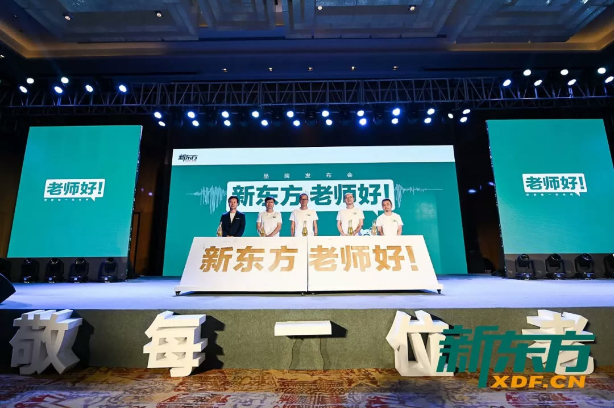
1品牌资产审计从品牌管家到建议取消品牌2018 年，在和新东方的品牌总监第一次沟通时，我们才知道新东方的业务线不仅仅有英语，还有一个销售规模近 80 亿的中小学全科的培训品牌叫优能中学。他们的校区就开在华与华公司附近的地铁站，但公司同事在这来来回回走了几年，竟然不知道这里还有一家给中小学生提供课程辅导的新东方。以双方的合作为契机，华与华正式成为优能中学的品牌管家，承担优能中学品牌管理和整合营销的任务。品牌资产审计，发现优能中学品牌认知问题品牌资产是能给企业带来效益的消费者品牌认知。华与华的品牌资产观是我们的所有动作，都要为已有的品牌资产保值增值，或者形成新的品牌资产。所以我们面对一个品牌，第一件事情就是进行“品牌资产审计”，看看她到底有哪些品牌资产，哪些品牌资产能够在 50 年后还持续地给企业创造效益。但是在优能中学的品牌资产审计中，我们却发现了 4 个问题：1 ）大家对新东方的印象还一直停留在英语培训上，不知道新东方其实是综合教育机构。新东方的员工都是教育工作者，有着老师的情怀，喜欢低调和内敛地去做事。新东方的品牌对外宣传也一直都非常低调。因此，大家对新东方的印象还一直停留在英语培训上，并不知道新东方是还有早教、学前教育、中小学、大学、留学辅导等各类型业务的综合教育机构。2 ）业务部门之间有厚厚的部门墙新东方自 2008 年就已经完整布局了 k12 的业务线，中学业务叫优能中学，小学业务叫泡泡少儿。
两个业务领域有两个团队管理，双方之间形成了厚厚的部门墙， 不但给自己内部造成负担，还给许多孩子也造成了负担：从六年级到初中段，还需要再经过选班、报班的环节。3 ）优能中学本身的品牌信息不明显对外宣传的所有信息，不管是教学中心的门头还是宣传物料，新东方是第一优选露出的信息，而优能中学本身的品牌信息并不明显。甚至在第一次的沟通会议上，大家也讲自己是新东方，从头到尾都没有出现优能中学这个品牌信息。4 ）消费者认新东方而不是优能中学从消费者的认知来说，大部分的消费者认为自己选择的是新东方，而不是优能中学。和别的家长推荐学校时，也会说新东方。有的家长甚至都没有注意过优能。在品牌资产审计的工作中，我们得出结论：优能中学本身不具有品牌资产，新东方才是人人都认识、成本最低、能够为企业带来效益的消费者认知。但是新东方之前的强弱背书品牌结构不能最大化地发挥「新东方」这一强势的品牌资产。
▲新东方强弱背书品牌结构
这就造成了在品牌运营管理工作中的资源浪费，也让新东方的员工非常困惑：优能中学作为新东方的子品牌，和母品牌的关联性和差异性是什么呢？在品牌管理的工作中，资源要着重投资在新东方的品牌上还是投资在优能中学的品牌上呢？
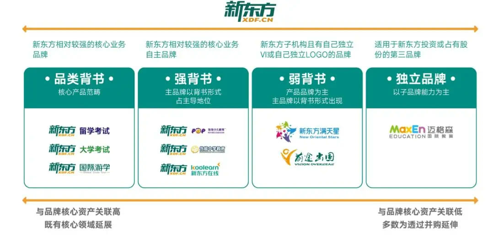
取消优能中学品牌的“戏剧化”建议面对这样的问题，华与华给出的建议是取消新东方子业务品牌优能中学，以「新东方」统一各业务条线，最大化品牌资产，降低成本。这也是华与华历史上首次遇到这样的情况：客户交给我们一个品牌，让我们为这个品牌做品牌管理和营销的工作，但是我们的第一个建议却是取消这个品牌。以「新东方」统一各业务线后，新东方也彻底告别过去子品牌林立、入口五花八门的时代，从外部形象到内部管理，正式形成统一步伐。新东方所有的资源也都投资在新东方这三个字上。为了打通业务部门墙，华与华提出以新东方中小学全科教育的业务名代替原来的泡泡与优能。命名就是召唤，通过命名传递购买理由，召唤我们的目标消费者。从六年级到初中段，学生也没有必要再重新选班、报班，极大地减少了消费者的流失，也降低了企业内部的运营成本。
2企业寻宝发现新东方的资源禀赋回到原点思考，回归教育行业的消费本质这个建议取得客户认可之后，我们开始思考新东方的品牌战略。始终服务于最终目的，我们回到原点：这个行业的消费本质究竟是什么？消费者在选择培训机构最重要的考虑因素是什么？
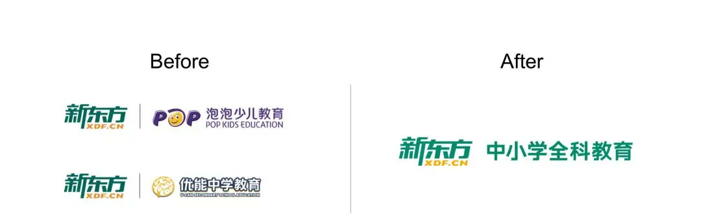
为了寻找这个答案，我们走访了武汉、西安两个城市，拦访了几百名家长及学生，并组织了 4 场消费者焦点座谈会，发现老师、提分效果、学霸多、课堂氛围依次是消费者选择培训机构的重要考虑因素。其中，老师是家长和学生最关心的因素。我们来听听消费者的原话：1 ）西安某消费者（学生）——“一开始上的时候，我就是直接去上课，但到后面，因为每个老师真的就是人特别好，教的也特别好，课堂气氛非常活跃，慢慢地我就爱上这个班了。2 ）西安某消费者（家长）——“首先他喜欢这个老师，这个老师讲课他能听懂。”3 ）武汉某消费者（学生）——“我妈妈问我要不要续班，我说这个老师挺好的，那就续吧。”4 ）武汉某消费者（家长）——“别人说哪一个老师好，我们只是冲着那个老师，不是哪一个机构，就是只去那个学校，只上那个课。”「老师」、「老师」、「老师」是调研中消费者提及最多的、最关心的词。回归教育行业的本质，老师是教育行业的基本面。我们期待一个全面发展的学生，那么我们需要一个全面发展的好老师。教师重要, 就在于教师的工作是塑造灵魂、塑造生命、塑造人的工作。一个人遇到好老师是人生的幸运,一个民族源源不断涌现出一批又一批好老师则是民族的希望。挖掘新东方「老师好」的企业资源禀赋众所周知，新东方成立初期就是因俞老师等“名师”的高品质教学而在行业中脱颖而出。如今新东方已进入“后名师时代”，新东方名师已成为一个集体主义概念。 “老师”是新东方的核心资源。新东方不仅在教师入口端高标准、严要求，并建立了系统的教师培训和教学评估体系，形成新东方老师选、育、任、留、用的闭环系统。并与哈佛、耶鲁等世界名校合作，提供海外名校游学研究计划，培养与国际接轨的复合型人才。新东方在发展的26年中，在好老师的资源上投入远远超过其他的培训机构。1 ）一课多磨，高效教学
新东方的老师在上课前，会进行数个月的批课、磨课。老师备好教案后，会将备课资料上传至集团的磨课系统，并定期的参与教研组教研，由教研组长批课，提出改进意见，经过上百小时的练习，才能最终站上讲台。
2 ）教学功底有大考，教学质量更保证新东方的老师要经历一年 2 次的功底考试。作为衡量教师专业知识与能力的重要指标，由第三方专家团队出卷，内容不仅包含教师的学科专业功底，还涵盖了国家课程标准。
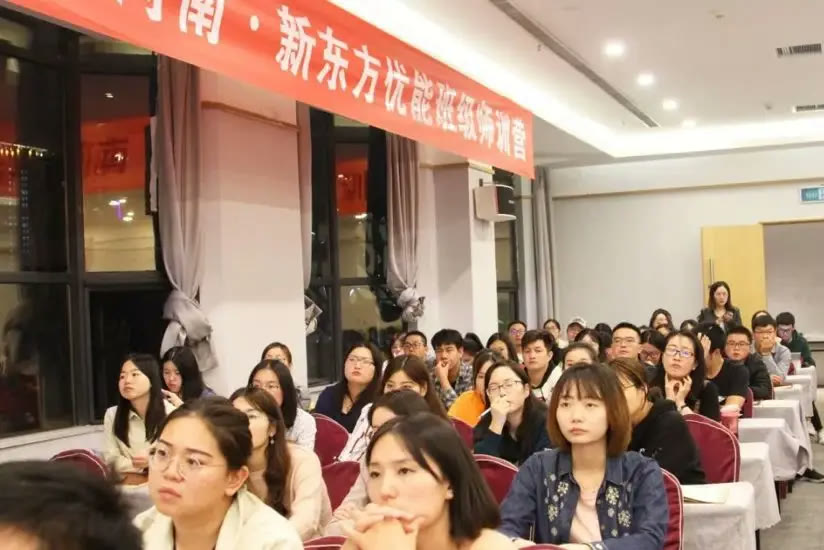
我们将这些称之为新东方的「好老师资源禀赋」。至此，新东方的品牌战略方向已经非常明确了，就是基于现在已经有的「好老师资源禀赋」，继续加强对教师的战略资源匹配，重新书写好老师定义。
3品牌谚语引爆 13亿人大脑集体潜意识明确了新东方的品牌战略方向之后，如何用一句话来引爆战略，最低成本地传播出去？在华与华，我们创造了一个词，叫“品牌谚语”！什么是品牌谚语？谚语是人类古老的忠告和人类经验的传承，它是有原力的，它根植于人们的集体潜意识。当你用谚语沟通的时候，大脑潜意识就进入听长老唱史诗的状态，毫无戒备和障碍就接受了。那新东方的品牌谚语是什么呢？
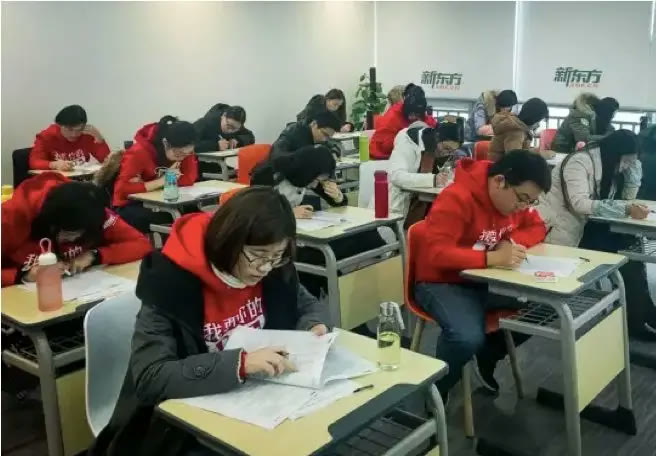
上学的第一天，我们学会的第一句话就是“老师好！”。「老师好」伴随着我们从幼儿园、小学、中学一直到大学，是我们向老师打招呼最常用的一句话。当我们长大成人、踏入社会，对于那些我们敬佩的人也会说一句：“老师好！”
可以说「老师好」是全国人民都知道、全国人民都会说、张口就能来、随口就能说的一句话！我们将这句耳熟能详，从小说到大，其中蕴藏着人类文化原力的俗语，注入到新东方
从此，新东方牢牢占领了“老师好”这一独特的价值，想起「新东方」，就想到「老师好」；看到「老师好」，就想起「新东方」。
4品牌谚语
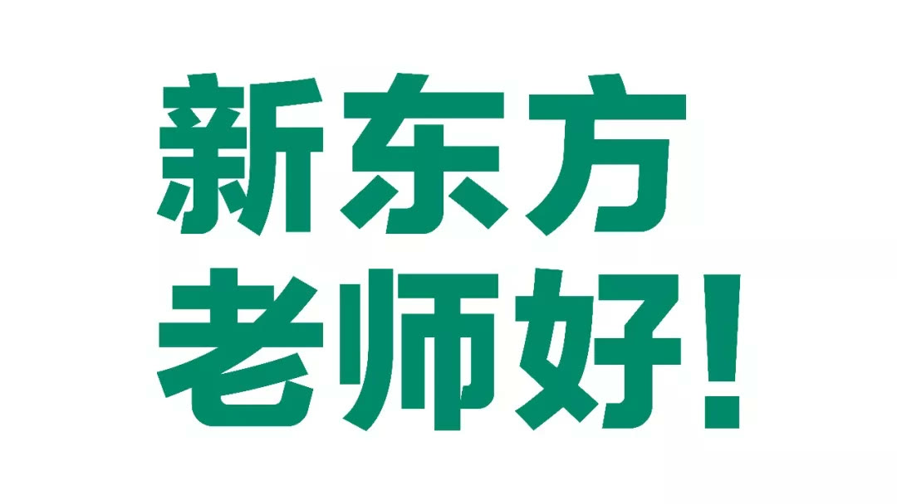
口号的背后是投资，是人力、财力、物力资源的集中，是压倒性投入。口号的提出只是一个方式，目的是倒逼内部的进步和提升。的、可量化的内部行动准则，全国统一推广使用：1 ）学识深厚，功底好2 ）快乐励志，学风好3 ）用心负责，服务好
新东方采用从 T0 到 T6 不同职级的培养机制，并进行分级培训。配合运营机制的调整，教师薪酬考核体系也有所变化。从教师专业素质培训、教师专业素质提升、国际教师素质培训体系、国际教师认证 4大体系构建起了一整套的教师培养体系，全面培养新东方老师的专业素养，并不断挖掘、培养更多的好老师！服务透明化，一扫就能查教师信息新东方开始着手建立新东方老师口碑平台。未来新东方的客服和前台不用再一一向家长介绍教师信息，家长只需一键扫码即可获知教师资历、教师资格证、背景证书、评价等。
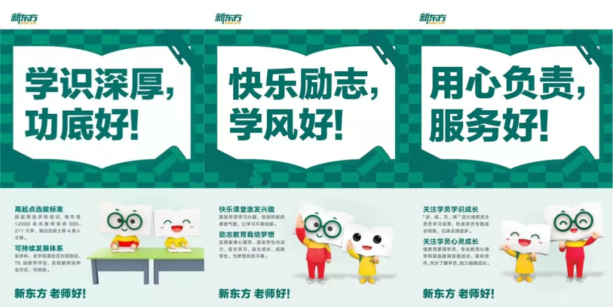
新东方教育科技集团副总裁张戈老师说：“平台只是一个载体，对外让教师信息更透明，对内倒逼教师不断修炼内功。其实老师非常在乎颜面，为了让信息呈现更好看，老师会迫使自己不断提升。”
5超级符号为新东方注入人类文化的原力创造品牌形象的最好办法是用超级符号。超级符号本质是找到一个人人熟知、人见人爱的，和品牌的基因相契合文化原型，它能让一个品牌在一夜之间成为亿万消费者的老朋友，迅速建立起品牌偏好。超级符号，管用100年作为全国最大的综合性教育机构之一，“知识”这一核心价值深深地根植于新东方的品牌基因当中。新东方就是要占领“知识”的文化原型，寻找代表知识、学习的文化符号。提到知识，我们几乎不假思索地想到了代表知识的文化母体——书。华与华的超级符号方法就是要用原型，我们只使用生命力最强、最长的原型符号。这样的符号过去有多少年历史，未来就有多少年生命力。2000 多年前，书已经作为承载知识的媒介，成为代表知识的文化符号。原型已经活了 2000 多年，支持新东方的事业一百年，没问题。
超级符号私有化，独占“书本”符号找到了书本这个代表知识的文化符号，接下来我们就要考虑把它私有化，设计成为新东方品牌专属的超级符号。如何将书本私有化？第一，我们考虑的是要有“熟悉感”，即人人都认识，人人看得懂，最好能够寄生在我们熟悉的生活场景中，方便与消费者沟通互动；第二，要有 “自明性”，也就是可以无需解释，准确传递价值，没有歧义；第三，要与新东方教育培训的行业属性有明确的关联，传递行业属性。就这样，我们为新东方设计了从小学到留学的 4 个「读书人」的超级符号，并且并根据学生不同的年龄阶段的特点，赋予他们不同人物性格和角色特点。
▲新东方读书人超级符号
通过在教学和活动现场对读书人的应用，加强与消费者互动，提升消费体验，最终完成品牌传播的动作和品牌资产的积累，建立品牌储蓄罐。
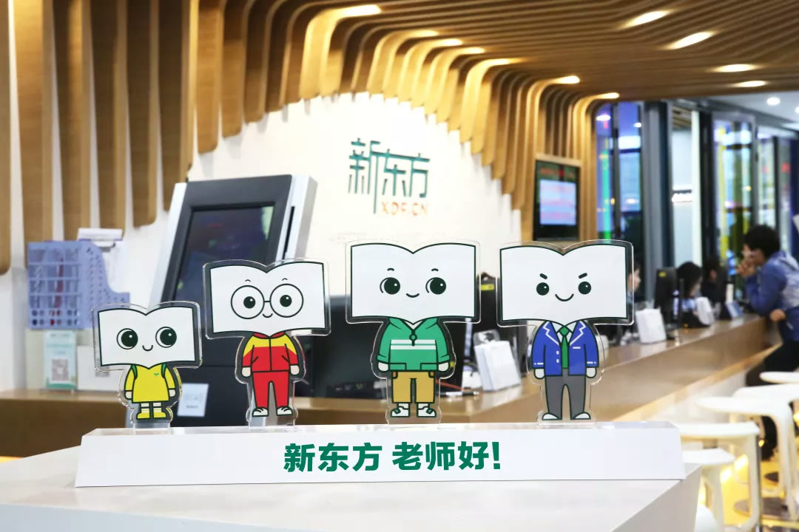
「读书人」的超级符号推出之后，受到了新东方全国各校区的热烈好评，反响强烈。各校区自发将「读书人」玩了起来。在新东方举行的读书人创意设计大赛上， 40 多个校区自发参与，提交了 54 份优秀的设计作品。
▲新东方读书人南昌方言版表情包上线刷屏
除了在教学现场之外，新东方还用读书人开展了有史以来最热闹、最丰富的品牌联动。与 Costa 、麦当劳的品牌合作让消费者看到了一个年轻的、充满活力的新东方！
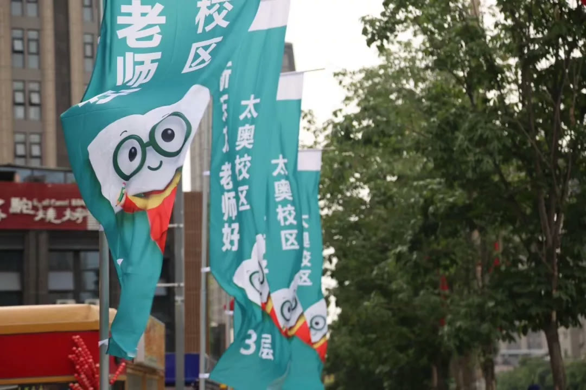
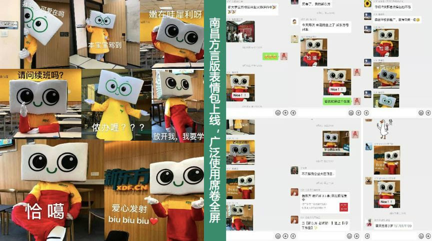
6全面媒体化掌握流量主权 实现层层转化华与华的传播观是全面媒体化。什么是全面媒体化呢？即一切能与消费者甚至是员工产生连接的媒介，都是你的媒体，要把他们全面媒体化。对于新东方来说，校区就是最大的自媒体，校区就是它的中央电视台。如何将校区变成品牌的传播平台，设计和重构消费者的体验流程，提升每一步的流量转化？校区指引，不用问路到门口我们以西安 E22 校区为例，观察消费者进入校区大楼之后的每一个接触点，设计了电梯门广告、电梯广告、电梯按钮指示牌、校区公告栏 4 大核心指引道具，一步一步把上门的消费者吸引到门口。
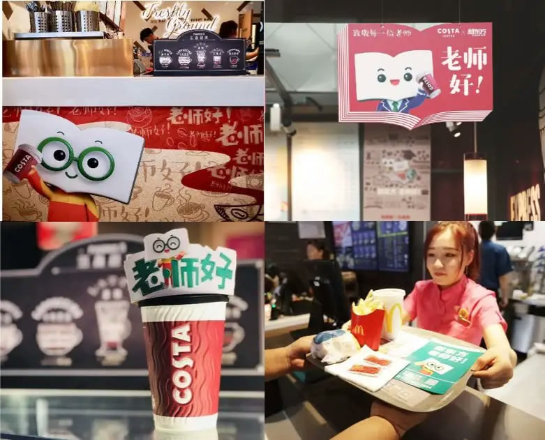
店外就要下指令，吸引消费者进店华与华方法有一个重要的理论就是“货架思维”，对于新东方来说，街道就是货架，门店就是产品，店招就是包装，让包装会说话，与消费者快速沟通，并把自己卖出去。因此我们将「中小学全科教育」上门头，一看就知道这是为那个阶段的学生提供教育服务的，极易对号入座，也一举改变了大家心目中新东方只有教英语的刻板印象。门头的字体和颜色组合也经过项目组内部反复测试，保证穿透力最强，距离 100 米也能看得见！
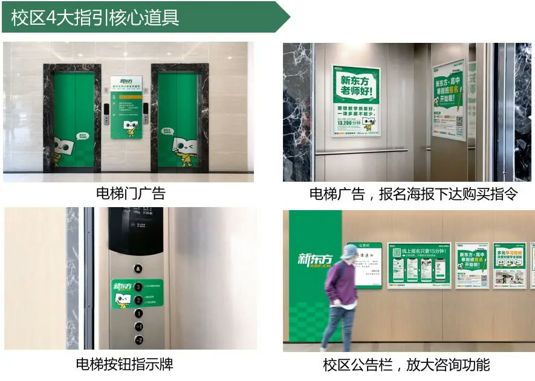
报班单页，1本顶4本当消费者进入校区之后，我们又观察到了一个问题：新东方原有招生资料多，光是前台就有 7 种报班资料， 4 个二维码，家长不知道拿哪一本资料，二维码也不知道扫哪一个。无法快速了解信息，家长只能询问前台，而前台的工作人员只有 3 位。前台兼职助教，很多信息不了解，无法快速回答家长的问题。因此在报班高峰期，常常有 20 多个家长拥挤在前台。项目组统计，从家长进入新东方到最终完成报班，平均需要 48 分钟，其中 22 分钟用于等待， 26 分钟用于咨询及办理报班。等待时间过长、问题没有得到有效回答，极易导致消费者流失。那在询问环节，家长最关心的问题是什么呢？我们统计了家长在咨询过程中的 10 大问题，分别是：
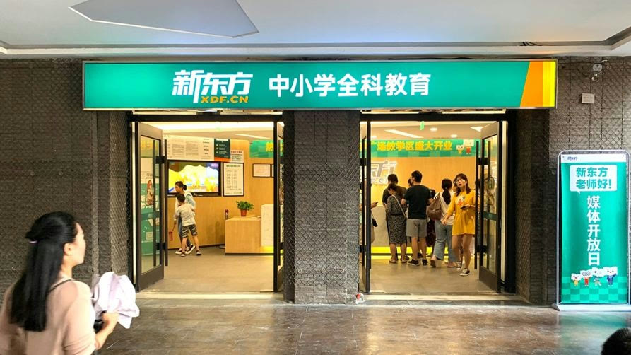
针对家长的问题，我们重新规划了新东方的报班手册。通过 2 大关键动作，用一本手册，快速回答家长关心的报班问题，加速决策的营销循环，减少反复咨询，缩短转化时间。
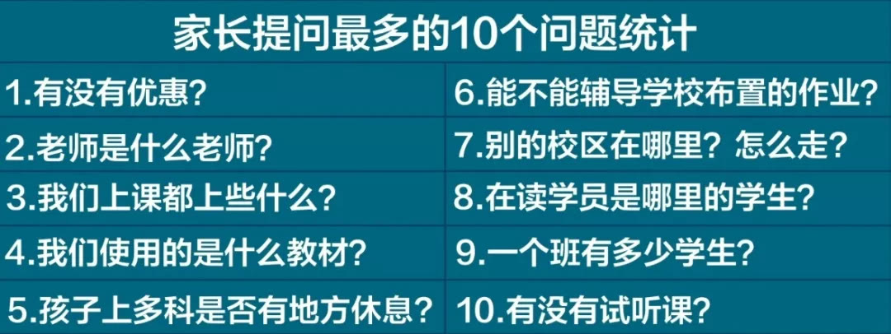
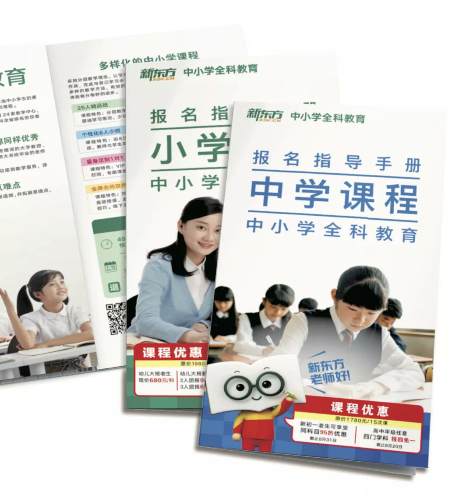
家长需要了解的报名基本信息在手册上就能看到，不必反复询问工作人员，前台工作人员效率提升，排队等待时间减少，平均缴费报班时间缩短 24 . 3 %。
不只是一个单页，地贴、教师评价墙、礼品墙，防撞条、每日课程表，都是我们的媒体。这些不起眼的小物料，比如一个小的校区打卡指示牌的改善，就能减少工作人员每天回答家长或孩子提问的次数，他们把时间和精力去帮助真正的需要咨询课程的家长，大大的提升了客户的满意度。
7全国联动让全国人民都说
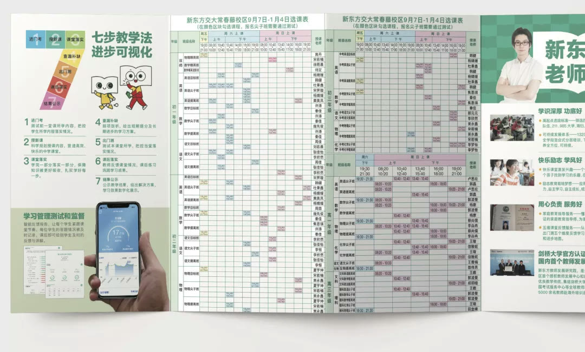
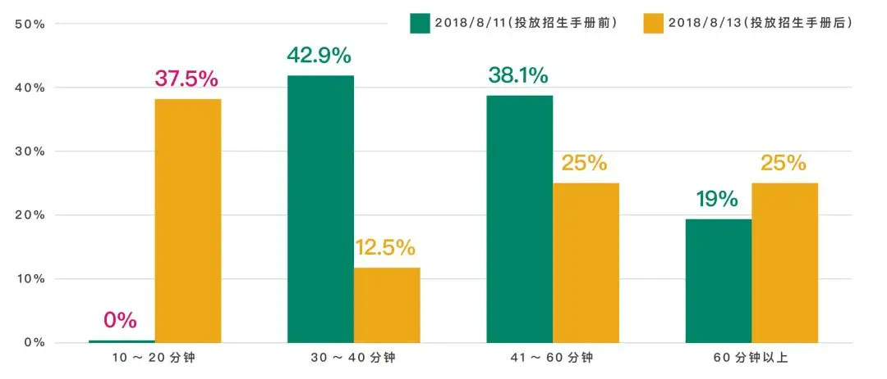
是这一品牌战略得以完美呈现的关键。在不断重复传播中，建立新东方品牌资产：
▲新东方老师好地标灯光秀，被央视和人民日报点赞
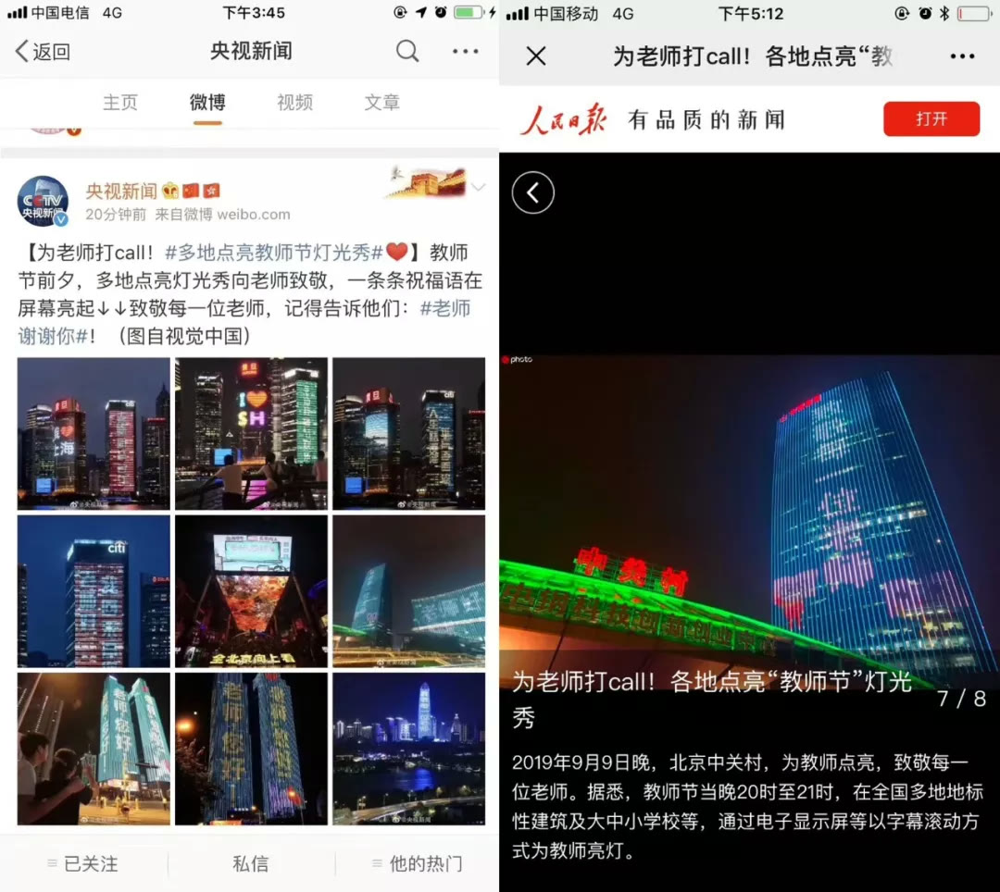
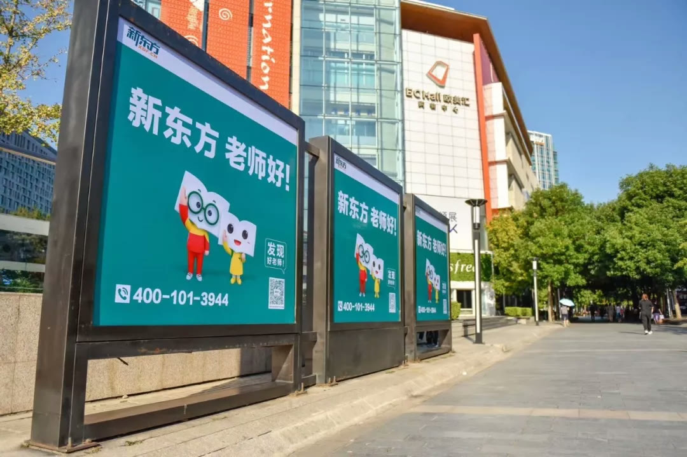
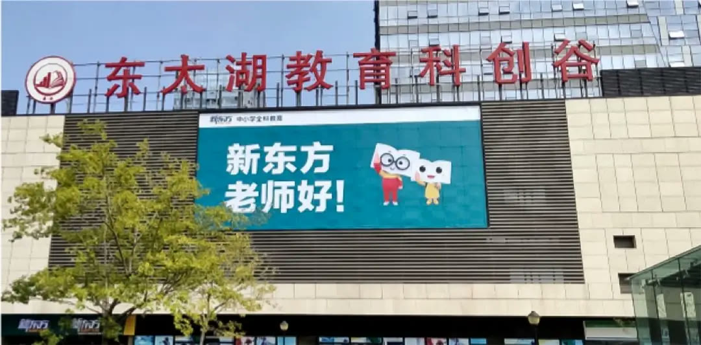
本文总结所有的事情都是一件事。我们再来回顾一下，华与华是如何帮助新东方建立起「新东方 老师好！」的品牌战略吧：1 .业务梳理：以新东方统一各业务线，通过中小学全科教育打通小学、中学业务墙。
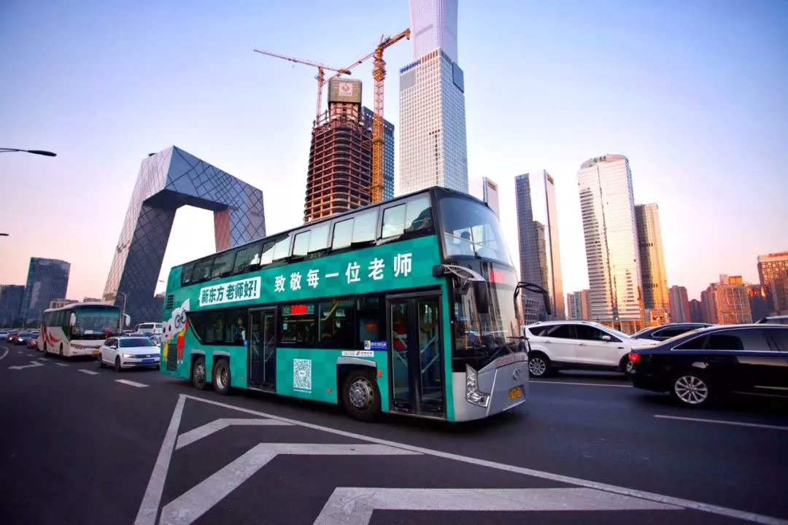
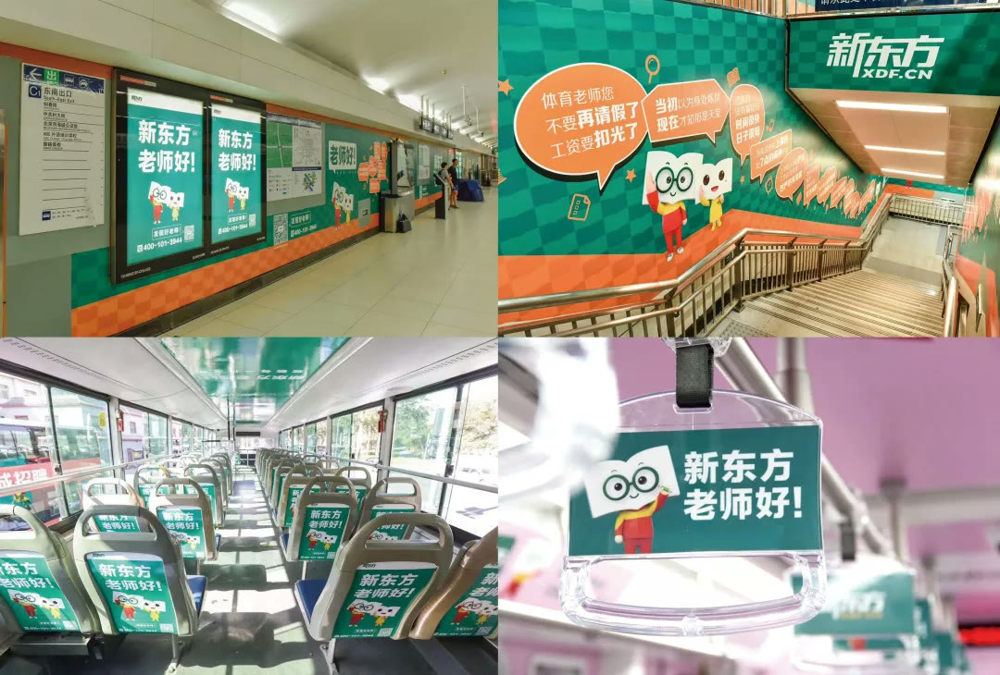
2 .品牌谚语：引爆 13 亿人大脑集体潜意识，推动新东方战略和落地运营的全面改革。3 .超级符号：为新东方注入人类文化原力，建立新东方品牌互动最强道具。4 .全面媒体化：掌握流量主权，实现流量的层层转化。新东方 2020 年第一季度财务业绩显示，新东方 2020 年 Q1 净输入为 10 . 72 亿元，同比增长 24 . 6 %；运营利润为 2 . 46 亿美元，同比增长 52 . 6 ％；其中新东方中小学全科教育业取得约 35 ％的收入增长，是新东方业绩增长的主要推动力。新品牌战略。作为一家咨询公司，华与华并没有为新东方发明创造新的东西，我们只是回归本质、重新发现新东方这个企业，找出它最有价值的资源禀赋，并将它重新打磨抛光，并通过超级符号就是超级创意的华与华方法将它展现给广大的消费者，放大新东方的品牌资产，释放新东方「老师好」的品牌价值。正如华与华董事长华杉说：干净，住汉庭’一样，都是最基本的东西。”